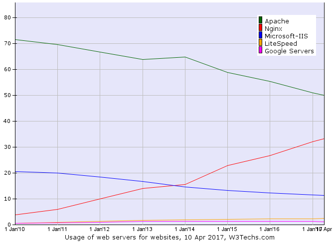
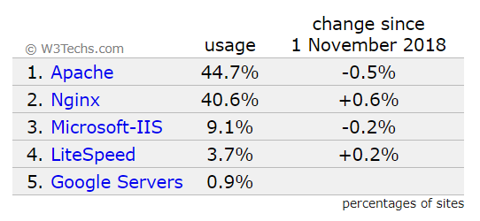
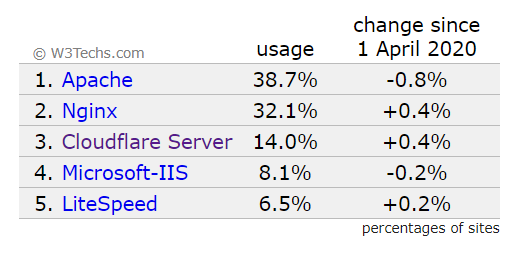
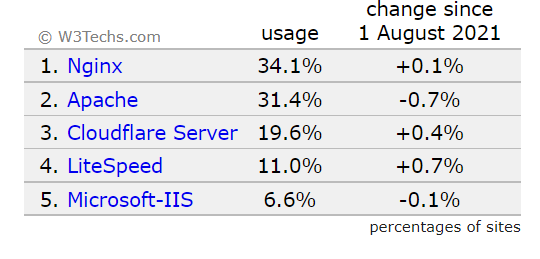
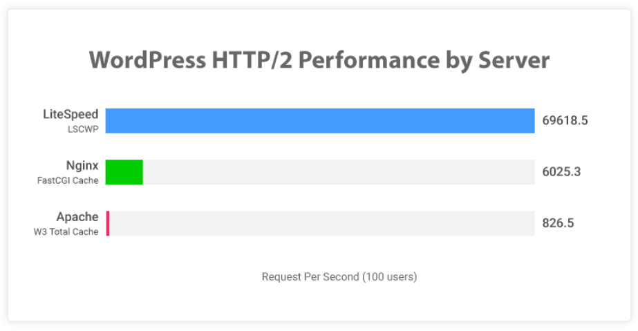

Webサーバーソフトの解説（Apache、nginx、Litespeed）シェア・導入会社
このページではApache（アパッチ）や、Nginx（エンジンエックス）などの
Webサーバーに搭載しているソフトウェアの種類について解説をしています。
Webサーバー本体の構築方法についての解説ではありませんのでご注意ください。
また、レンタルサーバー各社がどのソフトを導入しているのかについても、まとめています。
Webサーバーソフトの概況とシェア
Webサーバーに搭載されている主なソフトウェアは、3種類になります。
まず、2010頃までは70％以上のシェアを持って業界のデファクトスタンダードだった「Apache（アパッチ）」が1つ目。
ここ10年でシェアを一気に伸ばしてきた「Nginx（エンジンエックス）」が2つ目。
また、同じくシェアが増えている「Litespeed」が３つ目になります。
2021年の今、ワードプレスに適しているのはLitespeed、次にNginxだと言われています。
ここ10年ではNginxのシェアが大きく増えていますが、直近1～2年ではLitespeedが最もシェアを増やしています。
「Cloudflare Server」も大きなシェアを持っていますが、当ページでは説明を割愛しています。
各ＷＥＢサーバーソフトのシェア推移
各ソフトウェアの世界シェアになります。次の図解は2017年時点のものになります。
Apacheがシェアを落とし、Nginxが増やしているのがわかります。
2010年～2017年のWEBサーバーシェア推移 w3techs

2018年11月時点の各WEBサーバーシェア
実際にシェアのパーセンテージを表示させたものが次の数値になります。
Nginxが40％にまで迫っています。

2020年5月時点の各WEBサーバーシェア
Nginxが2年ほどで40％から32％までシェアを落としています。
変わってLiteSpeedが3％から6.5％まで増やしています。
「Cloudflare Server」が急にシェアに入ってきているのもわかります。

2021年8月時点の各WEBサーバーシェア
「Litespeed」と「Cloudflare Server」がそれぞれ1年間で5％ほど増えています。また、Nginxもシェアを微増させています。
結果、Apacheのシェアが31％近くまで落ち込みました。

Apache、nginx、Litespeedについて
Apache（アパッチ）とは？
20年近くデファクトスタンダードとして使われているwebサーバーソフト
Apacheはwebサーバーソフトの代名詞でもあり20年近く多くのサーバーに導入され運営されてきた実績があります。
2010年頃にはシェア70％近くありました。
近年になりシェアを落としてきていているものの、まだ大体40％ほどのシェアがあります。
つい最近まで7割以上のシェアを獲得していたということもあり、日本のレンタルサーバーのほとんどでも導入されていたのがアパッチです。
サーバー系の書籍をみても本屋に並んでいるのはアパッチのものがほとんどでしたし、webサーバーを構築する際のソフトとしても大体、どのホームページでもアパッチを導入することを前提として
いたところが多かったです。
nginx（エンジンエックス）とは？
ここ10年で、最もシェアを獲得したwebサーバーソフト
20年近くアパッチが全盛期だったわけですが、インターネットでホームページを見るための規格として「HTTP2」が採用されたこと。
多くのWebサイトがワードプレスで作られるようになり、それに適した「Nginx」がwebサーバーソフトとして選択されるようになりました。
エックスサーバーなど日本の多くのレンタルサーバー会社でも、この「Nginx」が採用されています。
「Nginx」は2010年にはわずか5％ほどのシェアでしたが、2017年には33％、そして2018年12月にはシェアが40％と
なっています。その後2020年には32％まで落ちてきていますが、レンタルサーバーにおいて最も人気のWebサーバーソフトになります。
Lite speed（ライトスピード）とは？
W3Cの統計データでは2020年に6.5％、2021年8月に11％までシェアを増やしてきています。
Wordpressに最適化した場合、Nginxよりも表示が速いとされていて、ここ1年～2年ほどでNginx以上にシェアを増やしています。
今後の増え方によってはNginxを超える可能性もあります。
当サイトで紹介しているレンタルサーバーでは「ロリポップ」「mixhost」「カラフルボックス」がLitespeedを導入しています。
LiteSpeedの検証テスト（自社調べ）

https://www.litespeedtech.com/benchmarks
レンタルサーバー別・導入ソフト
その他の要素で比較する
プラン選びは料金だけでなく、CPUやメモリなどのスペック、そして管理画面のわかりやすさ、お問合せなどのサービス面。
様々な要素が関わってくるため迷ってしまうと思います。
他の要素もくわしく比較していますので、検討の判断材料にして下さい。
設定が不得意な方は：「ワードプレス簡単インストール」
安定性を求める方は：「稼働率」
この記事の著者・プロフィール
Web制作を始めて約19年になります（HTML/css、Photoshop、Webマーケティング）。2005年から当サイトの運営を開始。
これまでに300個以上のドメインを取得、10社を超えるレンタルサーバーを利用してきました。